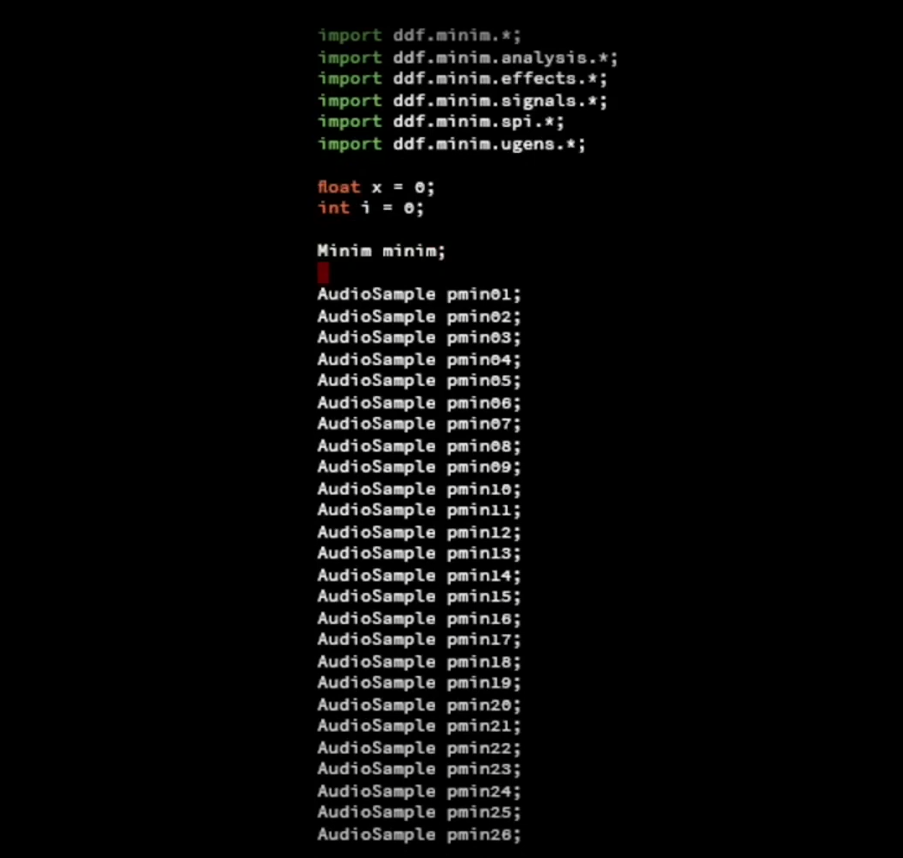

Cette pièce intègre mes recherches autour de la réappropriation d’objets de notre quotidien. Je m'intéresse ici au code informatique, à sa part textuelle et à son écriture. Le code informatique est présent sous différentes formes et dans différents langages de programmation dans des applications, logiciels, que nous utilisons tous les jours. Ce sont des langages complexes dont la compréhension nécessite un véritable apprentissage. Avec cette pièce, je souhaite proposer une autre approche de ces écritures qui peuvent paraître absconses pour beaucoup d'entre-nous : une approche musicale qui permet de rendre le code plus accessible et sensible. Voici le procédé de réalisation de la pièce : j'ai écrit un programme qui récupère son propre texte, isole chacun des caractères. Le programme associe ces derniers à des sons échantillonnés et lit donc le texte du programme en musique. S'opère ainsi une mise en abyme dans laquelle le programme s’interprète lui-même en une composition musicale générative...
Le Code Qui Se Joue
2022-2023
Installation multimédia
Dimensions variables
|
|
 |
|---|---|
|
Photographie de la pièce : Le Code Qui Se Joue |
Extrait vidéo : Le Code Qui Se Joue, 2'00 |